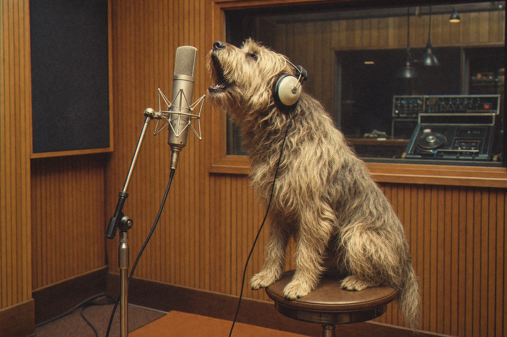

“Even he sings in tune now.”

Pitch correction usually comes in two flavours: you can hear it, or it doesn't work. BuenoVOX was built for the space between, where the note is right and the singer still sounds like a person.
Let it find the notes automatically, or play the target notes on your MIDI keyboard and it will follow you to the semitone.
Set it tight or set it transparent. You won't hear a robot unless you specifically ask for one.

Automatic or MIDI-driven correction.
BuenoVOX
Natural vocal pitch correction.
Open source · AU · VST3 · CLAP
Jardim SonoroOpen-source audio research
Download: jardimsonoro.com/audioSource & issues: github.com/nagualcode/buenovox
Vocals06